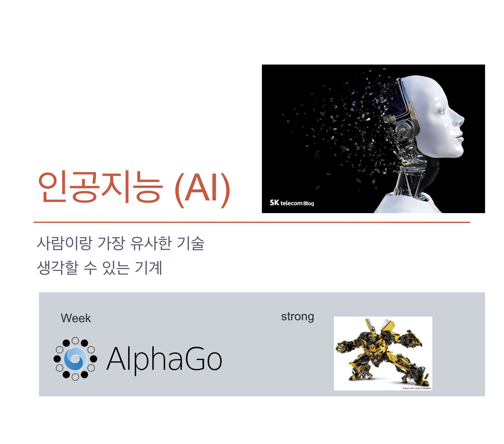

먼저 제 1차 산업혁명은 유럽과 미국에서 18세기에서 19세기에 걸쳐 일어났다.
농경 사회에서 산업과 도시롤 바뀌는 시기 였으며,
철강산업과 증기 엔진의 개발이 1차 산업혁명에서 핵심적인 역할을 수행했다.
주로 농경 사회에서 농촌 사회로의 전환이 산업과 도시로 바뀌는 시기를 보았다.
철강 산업은 증기 엔진의 개발과 함께 산업 혁명에서 핵심적인 역할을 수행했다.
그 뒤 1870~1914 년에는 제 2차 산업혁명이 일어났다.
기존 산업의 성장기이자 철강, 석유 및 전기 분야와 같은 신규 산업의 확장과 대량 생산을 위해 전력을 사용했다.
그 뒤 20세기부터 현재까지 진행 중인 제3차 산업 혁명 또는 디지털 혁명은 아날로그 전자 및 기계 장치에서
현재 이용 가능한 디지털 기술에 이르는 기술의 발전을 가리킨다.
제3차 산업 혁명의 발전에는 개인용 컴퓨터, 인터넷 및 정보 통신 기술 (ICT)이 포함된다.
제 4차 산업혁명이란 위의 1,2,3차 산업혁명(특히 3차 산업혁명)을 바탕으로 기술이 새로운 방식을 대표하는 디지털 혁명 위에 구축되고 있는 산업혁명이다.
정보통신 기술(ICT)의 융합으로 이루어낸 혁명 시대를 말한다.
제 4 차 산업 혁명은 로봇 공학, 인공 지능, 나노 기술, 양자 컴퓨팅, 생명 공학, IoT, 3D 인쇄 및 자율차량을 비롯한 여러 분야에서 새로운 기술 혁신이 나타나고 있다.
참고영상
먼저 4차 산업혁명으로 벌어질 일에는 어떤 것들이 있을까요?
1.로봇이나 인공지능이 일자리를 대체할 것이다.
앞으로 13년간 자동화로 최대 8억개의 일자리가 사라질 것이라는 전망이 나왔다.이는 전 세계 노동력의 5분의 1에 달하는 수치다.
다만 고령화, 신기술 도입 등에 따라 새 일자리도 5억개 이상 창출될 것으로 예상됐다.
국내에서는 2025년까지 인공지능(AI)과 로봇의 일자리 대체율이 70%에 달할 것으로 전망된다.
특히 농업이나 판매직 등 힘들고 반복되는 직업일수록 대체률이 높았다.
2.디자이너와 엔지니어의 융합
이제 사람들은 기술에만 중요도를 두는 것이 아니라 디자인 또한 중요시 여겨 질 것이다.
(디자인기술융합)

Apple은 디자인기술융합에 사례 중 하나이다.
기술(Technology)과 인문학(Liberal Arts)의 교차점 그리고 서비스로 두터운 팬층을 가지고 있다.
3.생산이 비용이 0을 향해 간다.(무료화)

공유경쟁로 인해 생산비용이 줄어든다.(4.공유경제 플랫폼 참고)
또, 1-3차 산업이 소품종 대량생산이였다면
4차 산업부터는 3D printer 등을 이용한 소비자 위주의 다품종 소량생산 시대가 온다.
4.공유경제 플랫폼

먼저 공유경제란 영문으로 Sharing Economy, 완전 직역하면 빌려주는 경제라는 것이죠. 이는 말 그대로 공유 경제이다.
내가 소유하고 있었던 어떤 제품을 공유함으로써 경제적 이익을 추구한다는 것이다.
내가 부족한 것을 남에게서 빌리고 나에게 풍부한 것을 다른 사람에게 빌려주면서 상호 경제적 이익을 추구한다는 개념이다.
공유경제 플랫폼 회사는 플랫폼이 서비스나 재화를 소지하지 않고
플랫폼에 포함되어 있는 보유자가 소비자와 직통 연결되어 재화와 서비스를 공유한다.
이런 것들의 예로는 공유경제가 가장 활성화 되있는 택시(우버)와 숙박(에어앤비)서비스가 있다.
5. 언론의 비리 등으로 언론의 종말이 오고 유튜브,sns 등 1인매체가 인기를 얻는다.
6.빅데이터

빅데이터(big data)란 기존 데이터베이스 관리도구의 능력을 넘어서는 대량(수십 테라바이트)의 정형 또는
심지어 데이터베이스 형태가 아닌 비정형의 데이터 집합조차 포함한 데이터로부터 가치를 추출하고 결과를 분석하는 기술이다.
이때 machine learning과 deep learning 등으로 인공지능과 빅데이터 혹은 사물인터넷이 융합하며 방대한 양의 데이터가 생긴다.
빅데이터의 문제점은 바로 사생활 침해와 보안 측면에 자리하고 있다. 빅데이터는 수많은 개인들의 수많은 정보의 집합이기 때문이다.
그럼에도 불구하고 세계 경제 포럼에서 10대 기술 중 그 첫 번째를 빅 데이터 기술로 선정 했으며
대한민국 지식경제부 R&D 전략기획단은 IT 10대 핵심기술 가운데 하나로 빅 데이터를 선정 하는 등 최근 세계는 빅 데이터를 주목하고 있다.
7.3D printer
3D 도면을 바탕으로 3차원 물체를 만들어내는 기계를 뜻한다.
가공의 용이성 등 여러 문제 덕분에 초창기에는 대부분 재료로 플라스틱을 사용하였지만
점차 종이,고무,콘크리트,식품에 금속까지 재료의 범위가 점점 넓어지고 있어서 단순히 조형물 출력 뿐만 아니라
건축,설계 등의 향후가 기대되는 분야다.
3D 프린터 붐은 미국 오바마 대통령의 연설이 결정적인 역할을 했다.
2013년 2월 집권 2기 첫 국정연설에서 3D 프린터를 통해 미국 제조업에 차기 혁명을 일으키겠다고 선언했다.
이로 인해 미국 뿐 아니라 많은 나라들이 3D 프린터에 관심을 가지고 투자하기 시작했다.
위에서 언급했듯 3D 프린터는 플라스틱 뿐 아니라 거의 모든 것을 재료로 쓸 수 있다.
때문에 인공장기 건축 등에서 큰 관심을 받고 있다.
3D printer는 위와 같은 방식으로 프린트 된다.
8.인공지능
인공지능(AI)은 기계로부터 만들어진 지능을 말한다.
컴퓨터 공학에서 이상적인 지능을 갖춘 존재, 혹은 시스템에 의해 만들어진 지능, 즉 인공적인 지능을 뜻한다.
일반적으로 범용 컴퓨터에 적용한다고 가정한다.
이 용어는 또한 그와 같은 지능을 만들 수 있는 방법론이나 실현 가능성 등을 연구하는 과학 분야를 지칭하기도 한다.
인공지능에는 강한 인공지능과 약한 인공지능이 있는데 알파고 같이 한가한 일만 할 수 있는 인공지능을 뜻하며
현재 인간은 강한 인공지능을 제대로 만들 수 없기 때문에 약한 인공지능이 대다수이고, 강한 인공지능은 현재의 기술로서는 거의 힘들며,
나올 수 있을지 없을지도 미지수이다.
강한 인공지능으로는 영화 트렌스포머, 영화 아이언맨의 자비스 등이 있으며
강한 인공지능은 한마디로 모든 부분에서 AI가 가능한 로봇 혹은 인간수준의 AI라고 볼 수 있다.
더 자세한 정보-AI에 대해 더 알아보려면 클릭하세요.